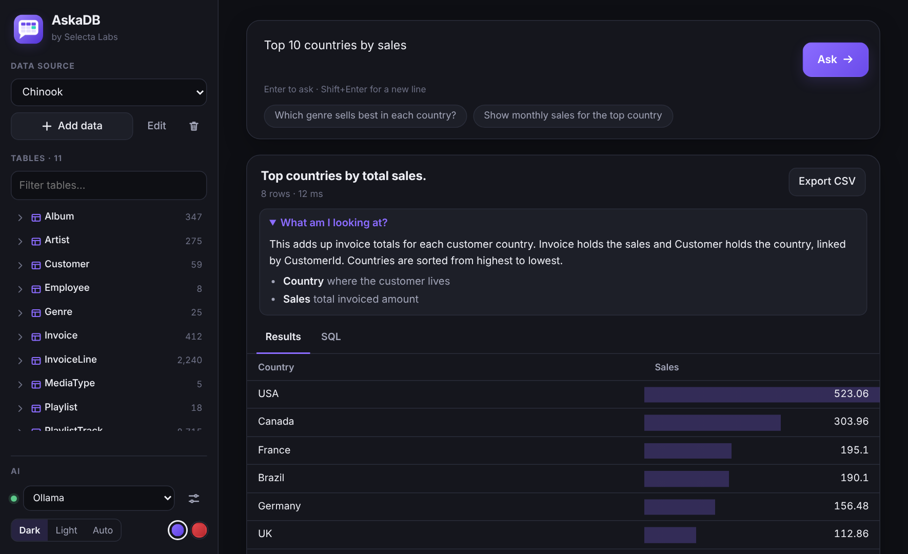
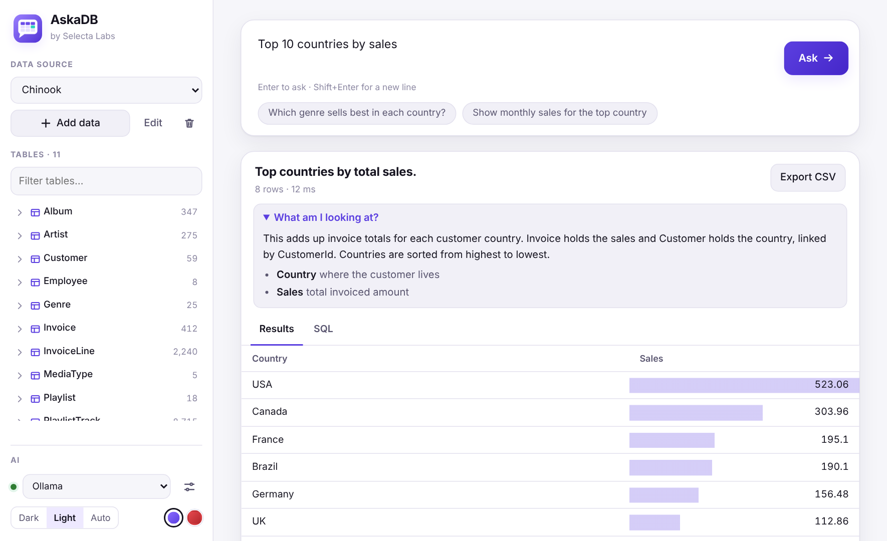

Type a question the way you would say it. AskaDB writes safe, read-only SQL, runs it, and shows the answer with a simple explanation.
Free · Windows 10 and 11 · Also runs in your browser


A question, a safe query, and an answer you can read.
No SQL skills needed. Short or vague questions are fine.
Add SQL Server, PostgreSQL, MySQL, Oracle, SQLite, Excel or CSV. Pick your schemas like in DataGrip.
"customers", "top 10 products by sales", or a full sentence. Spelling help included.
See the table, the SQL, and a short "What am I looking at?" note in simple words.
The small details that make it feel smart.
Thousands of tables? AskaDB first finds the tables that matter, then writes the query.
If one AI model is busy or fails, AskaDB switches to a backup quietly. You still get the answer.
If a query errors, AskaDB repairs it using only the error text, then tries again.
Browse tables, columns, keys, foreign keys and indexes like in DataGrip or SSMS.
Send any result to CSV in one click. Up to 1,000 rows per answer.
Dark, light or auto, with violet or crimson accents.
Your data is safe by design, with several layers of protection.
Use a local model or a free AI key. You choose.
Free on the Microsoft Store for Windows 10 and 11, or use it right now in your browser.